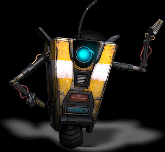

# An Intro To Generative AI
—Jamie Taylor
# 💭 Truthy vs Truthfull
- essentially `==` vs `===`
- going to provide enough information for you to google later
- aka "lies to children"
# 💬 Ancient Wisdom
Wonderful teachings exist -
The sword is unfathomable
- Yamaoka Tesshu
# What is AI?
- Any thoughts?
- What is AGI?
- What is ASI?
# Examples of what AI is?
- ChatGTP
- Claude
- Copilot
- Friend
- Devin
# Examples of what AI isn't?
# Not AI
# Not AI

# Not AI
# Not AI
# So What Gives?
- Generative AI
- Not really artificial intelligence
- "Just a really smart autocomplete"—Amit Barhee (2023)
# Have You Used AI?
- Likely, yes.
- Spotify
- Google / Bing
- Alexa/Siri/Hey Google
# How Does It Work?
- Guesswork / Sycophantic
- Seriously, it's just guessing
- 1,536 dimensions
- Demos
# What About Code?
- GitHub Copilot
- Uses the same model as ChatGPT
- Is a copilot (aka airplane copilot)
- Claude Code
# Can It Do My Assignments?
- Yes. Heard of vibe coding?
- Should it? No.
- Still need to know, for when it goes wrong
# What Can't It Do?
- Anything new
- Predict the future
- Remember: LLMs are just predictive text
# Should I Use It?
- Yes, but...
- It's great for ideation or prototyping
- Not good for long-form content generation
- Ask your lecturer or boss first
- Most companies have an AI policy
# Ethical Use of AI
- Microsoft, Google, Meta, Apple, etc.
- "AI for Good"
- Safeguards in place for all responses
- Jailbreaks: moving target
# Safety Tips
- Don't share anything personal
- Be very explicit about what you want
- Ask it to explain the reasoning
# About Me 🧑💻
- Dad & Step-Dad
- Mentor
- Podcaster (The Modern .NET Show)
- Software Developer
- Microsoft MVP
(in that order)
# Thank You
- You All
- The College